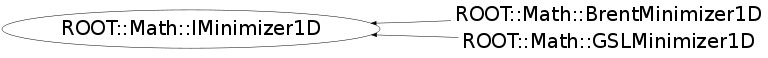

Function Members (Methods)
This is an abstract class, constructors will not be documented.
Look at the header to check for available constructors.
public:
| virtual | ~IMinimizer1D() |
| virtual double | FValLower() const |
| virtual double | FValMinimum() const |
| virtual double | FValUpper() const |
| virtual int | Iterations() const |
| virtual bool | Minimize(int maxIter, double absTol, double relTol) |
| virtual const char* | Name() const |
| ROOT::Math::IMinimizer1D& | operator=(const ROOT::Math::IMinimizer1D&) |
| virtual int | Status() const |
| virtual double | XLower() const |
| virtual double | XMinimum() const |
| virtual double | XUpper() const |
Class Charts
{kind=link}
{kind=link}
{kind=link}
{kind=link}

Function documentation
double FValLower() const
* Return function value at current lower bound of the minimization interval
double FValUpper() const
* Return function value at current upper bound of the minimization interval
bool Minimize(int maxIter, double absTol, double relTol)
* Find minimum position iterating until convergence specified by the absolute and relative tolerance or
* the maximum number of iteration is reached
* Return true if iterations converged successfully
* \@param maxIter maximum number of iteration
* \@param absTol desired absolute error in the minimum position
* \@param absTol desired relative error in the minimum position